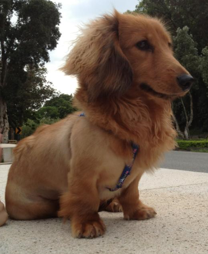
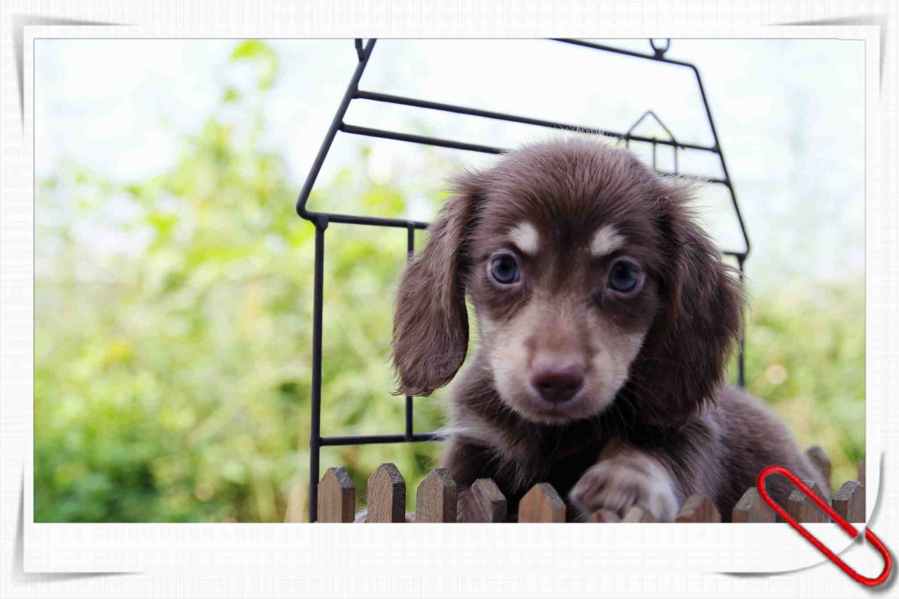
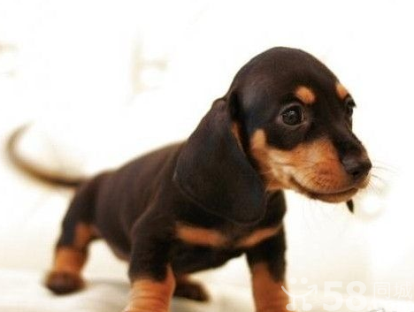
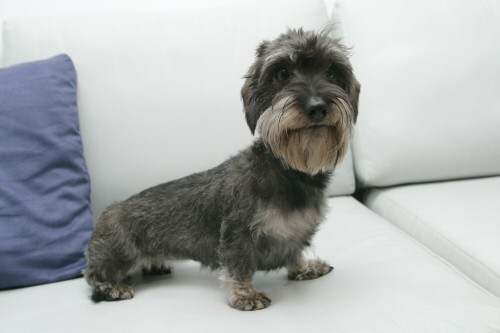

腸腸
臘腸犬，又稱達克斯獵犬（德語：Dachshund），是一種短腿，長身的臘犬。其名源於德國，「Dachs」意思是獾，「Hund」意思是狗，原意「獾狗」。此品種被發展為嗅臘，追蹤，及捕殺獾類及其他穴居的動物．有意思的是，雖然「Dachshund」是一個德語單詞，但是它在德國並不常用，德國人通常叫它「Dackel」或「Teckel」。
身體長，短很腿，毛色多達10多種以上，如黑色和褐色、深咖啡色、紅色、奶油色等。而現在當作寵物用的臘腸犬，共有長毛、短毛、剛毛3種，個性穩定而溫和、聰明、充滿好奇心，並具熱情、黏人等特性，由於體型關係，易有椎間盤的疾病問題，需要特別留心照顧與陪伴。
長毛臘腸
被毛：圓滑、光亮略呈波浪狀的毛髮，頸部以下、胸部、身體下方、耳朵和腿後面的毛髮長。被毛給與他一種文雅的外貌。耳朵的毛髮短不理想。毛髮過與豐富，形成面具，整個身體的毛髮長度一致，捲曲的被毛，或在背部有明顯的區別都屬於缺陷。尾巴：溫和的舉著，在脊椎的延長線上。毛髮達到最佳長度，形成旗幟狀。毛髮的顏色：與短毛臘腸犬一樣。鼻鏡和趾甲：與短毛臘腸犬一樣。
由來
長毛臘腸狗於1883年出現在德國，馮·布魯諾上尉是有記載的最早飼養者。他說長毛臘腸狗的毛髮顏色應與順毛臘腸狗的相同，但是毛髮的長度應與一種長垂耳的西班牙獵犬相似。據說長毛臘腸狗是與一種體形很小的長發垂耳多交配而成的。這種狗主要是用來獵捕鵪鶉的。
短毛臘腸
被毛：短、平順、光滑。既不太長，也不能太薄。臘腸犬的耳朵不能象皮革的樣子。尾巴：向尾尖逐漸變細，但沒有過多的毛髮。下腹部的毛髮長而圓滑，有部分塊有粗壯的毛髮不屬於缺陷。刷子狀的尾巴屬於缺陷，整個無毛或部分無毛的尾巴也屬於缺陷。毛髮的顏色：基本顏色雖然不重要，確定的樣式和基本色還是佔優勢。單一顏色，紅色（帶有或不帶深色、淺褐色的陰影散布著）和奶油色。胸部有少量的白色是允許的，但不理想。鼻鏡和趾甲為黑色。
由來
早期的臘腸狗可能非常兇猛，因而經常被派去做危險的工作。1812年，一位早期的養犬愛好者沃爾瑟博士寫道：「這些臘腸狗敏捷、好鬥、勇猛且頑強，如果它的身材再高大一些，它真可能與任何獵犬交戰」。
剛毛臘腸
被毛：除了頜部、眉毛、耳朵外，身體上都覆蓋著統一的緊密、短、厚重、粗糙、堅硬的外層披毛，有細膩、柔軟、短的毛髮（底毛）分佈在粗糙的毛髮中。缺乏底毛屬於缺陷。有特色的面部毛髮包括鬍鬚、眉毛。耳朵的毛髮比身體上毛髮短，差不多是平滑的。剛毛臘腸犬毛髮的一般排列，從遠處觀察，與短毛臘腸犬大體一樣。如果有些柔軟的毛髮，不論在身體上，尤其在頭頂，屬於缺陷。正確的毛髮長度、捲曲的毛髮或波浪狀的毛髮是一樣的。毛髮呈不規則的條狀，向不同方向。尾巴：健壯，有濃密的毛髮，向尖端逐漸變細。平坦的尾巴屬於缺陷。毛髮顏色：大多的顏色是野豬色、黑色、褐色、帶有不同深度的紅色、所有的顏色都允許。胸前有少量白色雖然能接受，但不理想。鼻鏡和趾甲：與短毛型相同。
由來
剛毛狗是由毛髮光滑的臘腸狗和德國杜賓犬或丹迪·丁蒙狗（一種腿短、身長、運動敏捷的垂耳小狗）交配而成的。儘管這種丹迪·丁蒙狗給臘腸狗帶來了許多好的品質，便有時培育出來的臘腸狗仍然毛髮鬆軟，這對於需要一種短而硬毛髮的臘腸狗飼養者來說仍然是一個問題。